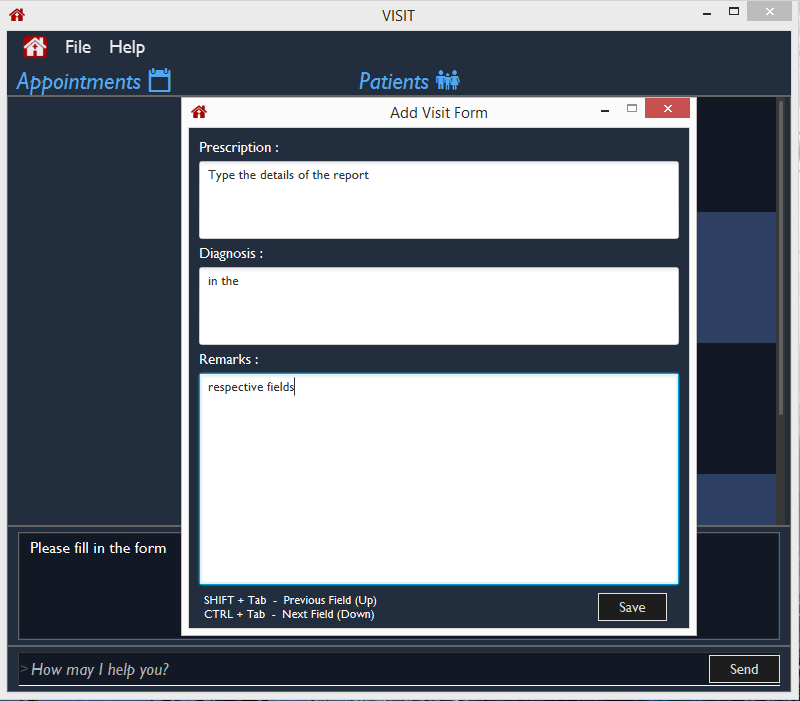
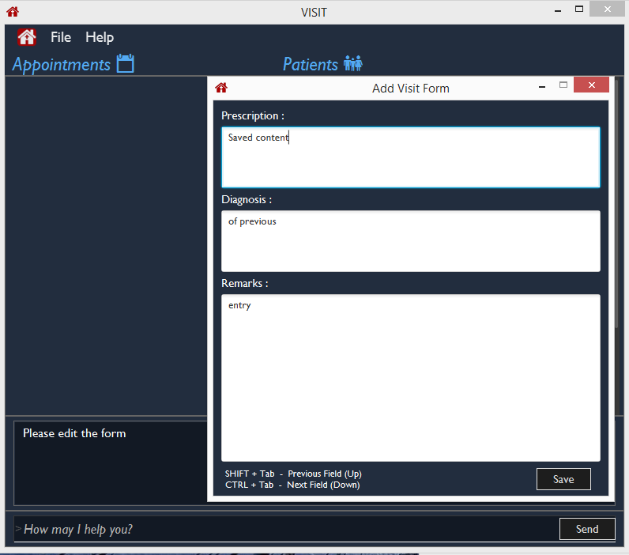
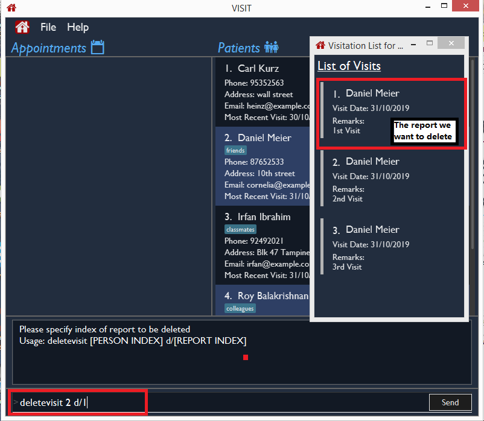

Overview
VISIT is a Java desktop patient-tracking application for doctors on-the-go. The user interacts with it using a CLI(Command-Line-Interface), and it has a GUI(Graphical User Interface) created with JavaFX. It is written by the 5 man team UnrealUnity(which I am a part of), and has about 16 kLoC.

I was in charge of implementing the Visitation Report system which consists of the addvisit, editvisit and deletevisit commands. The rest of this document serves to provide a comprehensive overview of my involvement in this project.
Summary of contributions
This section provides a brief synopsis of my contributions.
-
Major enhancement: Implemented the Visit Report system
-
What it does: Allows doctors to create, edit and delete patient reports.
-
Justification: The feature is essential as it enables doctors to record down vital information(such as the prescription and diagnosis) for each consultation with the patient and thus, grant doctors the ability to track the well-being of their patients.
-
Highlights: This enhancement required a holistic understanding of the code base since the implementation necessitates changes in every component of the Model-View-Controller framework. Making sure that the different components of storage, logic and UI interacts with one another correctly is a great technical challenge.
-
-
Minor enhancement: implemented pop-up form for doctors to fill in consultation details.
-
Minor enhancement: implemented list pop-up for doctors to view the list of visit reports for a particular patient. The list automatically sorts itself by date, with the most recent report on the top of the list.
-
Minor enhancement: implemented a prompt window to notify the doctor when the chosen patient has no records
-
Code contributed: [RepoSense]
-
Other contributions:
Contributions to the User Guide
Given below are sections I contributed to the User Guide. They showcase my ability to write documentation targeting end-users. |
Viewing and Managing Visits
VISIT enables doctors to also track the visitations for each patient, allowing the specification of diagnosis, medications prescribed as well as other general comments per visit.
Adding a new visitation report for a patient : addvisit
Opens a pop-up panel that enables the specification of a new visitation report for a particular patient.
Format: addvisit INDEX [v/DATE]
Example:
Let’s say that you have just gotten a patient’s folder of past visits and you want to record a house call made on 3rd January 2019. The patient is 1st in the list.
To enter the details of the report into VISIT:
-
Type
addvisit 1 v/03/01/2019into the command box and press Enter to execute it.
-
Date must be in the "dd/MM/yyyy" format (e.g.
v/19/10/2019). The valid range of dates starts from the year 1900 and ends at year 2999 (inclusive).If no date is specified and the command is used without the prefix 'v/' (for example addvisit 1), the report will default to the current local date of the computer.
-
-
Key in the details in the respective fields of the pop-up form that appears.
-
Press CTRL + Tab to navigate to the next field (down)
-
Press SHIFT + Tab to navigate to the previous field (up)
-
-
Click the Save button or press F2 to save your entry.
-
The pop-up form closes and the display box will display a message indicating a successful entry.

While addvisit 1is valid, typing inaddvisit 1 v/without a valid date will give an error.

Editing the particulars of a visitation report : editvisit
Opens a pop-up panel that enables the editing of an existing visitation report of a particular patient.
Format: editvisit INDEX [i/REPORT_INDEX]
If no report index is specified, editvisit INDEX or editvisit INDEX i/ will open a panel showing the reports of that patient and the relevant indexes of the reports. To edit the visit report, simply re-enter the command with the desired report index.
|

Example:
Let’s say you want to edit the 2nd visit report of a patient and the patient is the 3rd name in the list.
-
Type
editvisit 3 i/2into the command box and press Enter to execute it.
-
Key in the details in the respective fields of the pop-up form(which is pre-filled with the existing information of the report) that appears.
-
Press CTRL + Tab to navigate to the next field (down)
-
Press SHIFT + Tab to navigate to the previous field (up)
-
-
Click the Save button or press F2 to save your edits.
-
The pop-up form closes and the display box will display a message indicating a successful entry.

| An error will be thrown if the report with the given report index does not exist or the index given is not a number. |

Deleting a visitation report : deletevisit
Deletes the specified visitation report.
Format: deletevisit INDEX [d/REPORT_INDEX]
If no report index is specified, deletevisit INDEX or deletevisit INDEX d/ will open a panel showing the reports of that patient and their relevant indexes of the reports. To delete the visit, simply re-enter the command with the desired report index.
|

Example:
Let’s say you want to delete the 1st visit report of a patient and the patient is the 2nd name in the list.
-
Type
deletevisit 2 d/1into the command box and press Enter to execute it. -
A panel showing the list of reports will be shown, now without the deleted report and the display box will display a message indicating a successful deletion.
| An error will be thrown if the report with the given report index does not exist or the index given is not a number. |

For both deletevisit and editvisit commands if the patient has no past records, a pop up with the message "Patient has no past records" will be shown instead of a list of reports when editvisit [INDEX] or deletevisit [INDEX] is run. Note that an error will be raised if the report index is provided to a patient with no past records, for example editvisit [INDEX] i/1 or deletevisit [INDEX] d/1.

Contributions to the Developer Guide
Given below are sections I contributed to the Developer Guide. They showcase my ability to write technical documentation and the technical depth of my contributions to the project. |
Visitation Report feature
Implementation
The Visitation Report feature allows the user to add, delete and edit a VisitReport such that for every housecall, information like the prescription and diagnosis can be stored. Every Person has a VisitList attribute and each VisitList object contains an arraylist of VisitReport objects. The feature is facillitated by VisitRecordWindow which creates a form for the user to key in the details of the report, VisitListPanel which creates an indexed pop up list of visit reports for the user to check the index of the report they want to edit/delete and SaveVisitCommand which saves the users input from the form. The following operations are also implemented:
-
VisitList#addRecord()— Adds newVisitReportobject to stored arraylist -
VisitList#editRecord()— ReplacesVisitReportobject at given index in arraylist with givenVisitReport -
VisitList#deleteRecord()— DeletesVisitReportby index from stored arraylist
The class diagram below shows the new additions to the Person class.

Given below is an example usage scenario and how every component of the Visitation Report feature behaves at each step.
Step 1. The user executes addvisit 5 v/12/12/2019 command to add a visit report to the visitlist of the 5th person in the address book. This returns a CommandResult which has the attribute date set as String 12/12/2019. MainWindow#executeCommand() is called and the check for CommandResult#isAddVisit() passes, calling VisitRecordWindow#setReportInfo() to pass the index of the person, the date, and a Logic object to initialize the respective attributes in the VisitRecordWindow class. MainWindow#handleShowVisitForm() is then called to display a pop up form for the user to fill in.
If the user executes addvisit 5 instead, the date attribute of the CommandResult will be set as the current date and the rest of the flow remains the same.
|
Step 2. The user fills in the form and presses f2 on the keyboard or clicks the submit button to save the report. This calls VisitRecordWindow#saveReport() which will create a new SaveVisitCommand and executes it, updating the VisitList of the person via Model#setPerson().
Step 3. The user decides to edit the report and executes the editvisit 1 i/1 command.MainWindow#executeCommand() is called and the check for CommandResult#isEditVisit() passes, calling VisitRecordWindow#setOldReportInfo() which initializes the respective attributes of VisitRecordWindow and populate the form with the content of the VisitReport from CommandResult#getOldReport() .MainWindow#handleShowVisitForm() is then called to display a pop up form for the user to fill in.
As shown in the figure above, if the user executes editvisit 1 instead, a CommandResult with a ObservableList<VisitReport> object will be returned. MainWindow#executeCommand() 's check for CommandResult#isShowVisitList() passes, calling VisitListPanel#setup() which populates the VisitListPanel with the contents of the ObservableList<VisitReport> object from CommandResult#getObservableVisitList(). Instead of displaying the pop-up form, MainWindow#handleShowVisitList() is called to display a pop up list showing an indexed list of all visitation records of the person.
Step 4. The user edits the form and presses F3 on the keyboard or clicks the submit button to save the changes. The same mechanism mentioned in Step 2 is used to update the contents of the edited visit report.
The sequence diagram below shows how Step 3 and Step 4 works.

EditVisitCommand and SaveVisitCommand sequence diagramStep 5. The user then decides that the report was beyond salvaging and decides to delete it. Executing the command deletevisit 1 d/1, VisitList#deleteRecord() deletes the entry from the arraylist and Model#setPerson() updates the person with the new VisitList. The CommandResult#isShowVisitList() check in MainWindow#executeCommand() passes and a pop up list showing an indexed list of all visitation records of the person is displayed.

If the user executes deletevisit 1 instead, the index value will be set to -1 and the VisitList#deleteRecord() block would be skipped, but the rest of the flow remains the same.
|
Design Considerations
Aspect: Range of acceptable dates for addvisit
-
Alternative 1 (current choice): Only allow dates with years 19xx or 2xxx
-
Pros: Prevents user from keying in rubbish dates like year 9999 or 0000
-
Cons: Must conduct 2 checks for date in parser, one for the format dd/MM/19yy and one for the format dd/MM/2yyy.
-
-
Alternative 2: Place no restriction on valid years
-
Pros: Only one check for dd/MM/yyyy format is required.
-
Cons: User can key in rubbish values like dd/MM/9102 or dd/MM/0192
-
Aspect: Keyboard binding to save report
-
Alternative 1 (current choice):
F2key-
Pros: No conflict with any other functions.
-
Cons: Not the most intuitive choice for users.
-
-
Alternative 2:
Enterkey-
Pros: Very intuitive choice for saving.
-
Cons: It’s also used to get to the next line, thus using it as the save button means users can no longer press
Enterfor next line
-